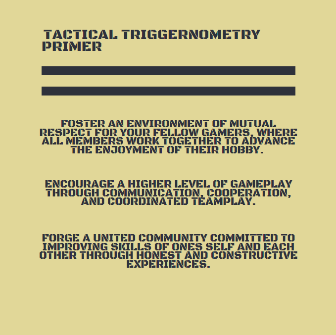
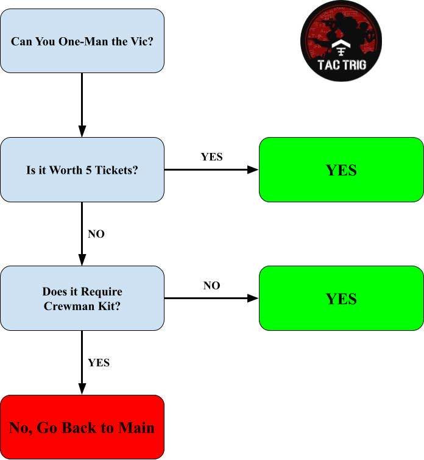

Tactical Triggernometry Squad Server rules¶
Welcome to TacTrig!
This is a detailed set of rules that all players must abide by on our Squad server.
A simplified set of rules on our server welcome screen in-game. In the event of a conflict between the simplified rules and this document, this document takes precedence. The admins reserve the right to remove anyone they deem harmful to the server.
The TacTrig discord can be found here: https://www.discord.io/trig
Enjoy the server? Want to skip the queue? Head over to discord to apply for whitelist!
Section 1: The TacTrig Primer¶
At TacTrig, we do not merely have a set of rules (though, of course we have those), we have a primer. The primer is best viewed as a set of guiding principles. All our rules flow from our primer.
If the administration team feels that a player, or a group of players is in consistent violation of this primer, we reserve the right to remove them from our community.

Section 2: TacTrig Policies¶
Before we lay out the rules, it must be said that Discord is a requirement for appealing any admin behaviour be they kicks, bans or other actions. We require you to be mature and display a basic level of decorum and in return, we promise to treat you with respect.
Section 2.1 Administration Policy¶
Do not argue with admins in-game and heed warnings. Admin decisions in-game are final and can only be appealed via discord. In-game chat is not the place to vent disputes. Arguing with admins in-game will result in a kick. For any disputes or issues with admin actions, please post them in discord under contact HQ with a write up of the situation.
Get an admin’s attention with !admin in any chat, and include the issue and any offending player names. Do not use admin ping to spam admins with useless messages.
Impersonating an admin or any TT member is prohibited.
Members of clans and communities, including TT and their admins, may not use their status in these clans and communities as the sole basis for requiring other players to perform actions in game.
Section 2.2 General Communication Policy¶
Please be respectful in all server communication. You may not spam text or voice chat (e.g. playing music when SLs are trying to coordinate in the staging phase). If you are asked to stop playing music by ANY PLAYER, that is considered a warning as the music is disrupting gameplay. Admins have the final say on what is a violation.
Our server has a policy of keeping all-chat to a minimum. All chat should, in general, only be used to contact an admin or talk about a server wide issue (e.g. lag). Some light banter is alright, but there should be no extended discussions of any sort in all chat.
If you fail to comply with an admin request to clear all chat, you will be kicked. Repeat offenders may be banned.
English is the official language of communication on our server; however, all players are welcome. We require squad leaders to have a basic level of English language fluency so that they can communicate with other squad leaders in command chat for the sake of teamwork. Within squads, any language is permitted and this is left to the discretion of the squad leader.
Section 2.3 Team Balance Policy¶
At TacTrig, we take team balance seriously. As such we expect our players to abide by the following policy:
All players, especially server regulars, are expected to help with balance on the server. Switching teams to play with friends is understood, switching teams because your team sucks is not acceptable.
Furthermore, to promote balanced gameplay and a positive player experience:
If a team suffers two heavy defeats (200+ tickets), current team balance will be discussed in the TT discord with all players present. Players may be asked to swap teams to correct balance issues. However, no players will be forced to swap. If you as a player believe there are issues with team balance, please bring them up constructively in all chat or directly with an admin so that we are aware of it and can work on the issue.
If the team balance situation is not fixed after three rounds, a team randomiser will be used. This may seem like a drastic measure, but it is necessary to ensure fair gameplay.
Section 2.4 Server Etiquette¶
We do not tolerate any racist, sexist, or otherwise bigoted remarks. This applies to all behavior on the server, including, but not limited to, voice and text chat, squad names, and player usernames.
We do not tolerate any form of hacking, cheating, game exploitation, or intentional glitching that may be used to gain an unfair advantage.
All players must join a squad. Unassigned players shall be considered AFK and kicked after 6 minutes via an automated system.
Any discussion of tickets in all chat is strictly prohibited. At no point should anyone share ticket counts or any information that may be used to gain an advantage (e.g. location of FOBs, vehicles, etc.) with the other team. We take integrity and fair play very seriously.
Intentional teamkilling is strictly prohibited, for any reason. See section 3.2 on teamkilling.
Squad leaders may kick a player from their squad for any reason and at any time.
We do not allow advertising, both in chat or with your in-game name.
When streaming it is required to have at least a 2-minute delay and to have an auto overlay that covers the map and pertinent game info on your stream. Your in-game name must not advertise that you are streaming (twitch, youtube, ttv).
Section 3: Gameplay Rules¶
At Tactical Triggernometry, we take a more serious approach to gameplay. If you play on our server, you are also expected to take a serious approach to the game. To encourage teamwork and good gameplay, we enforce the following rules:
Section 3.1 General¶
All squad leaders MUST HAVE WORKING MICROPHONES, actively lead their squad, and cooperate with other squad leaders.
All infantry squads must be led by an infantry squad leader, no exceptions. See section 3.4 on squad composition.
Players who create a squad MUST have every intention to lead the squad. Players who do not abide by this are prohibited. SL "hot potato" is not tolerated.
One-man locked squads are not permitted. There are exceptions for:
- Helicopters/Logistics
- Commanders
- Server Administration
- Anti-tank and indirect rocket vehicles (MRAP ATGM, Grad rockets; Spandrel jeep, etc.)
“Soft-locking” squads by auto kicking every player who joins will be considered squad locking...
Vehicle assets are first come, first serve for who gets in them first.
One-manning: Any vehicle worth 5 tickets or fewer can be one-manned. All vehicles worth 10 or more tickets that require crewman kits cannot be one-manned. Do not ever leave main without two crewmen in the vehicle if two crewmen are required (no picking up in the field).
If you find your vehicle one-manned in the field due to a crewmember disconnecting or getting killed, you must attempt to return to main or fall back to a safe HAB to pick up another crew member at the earliest available opportunity.

Camping enemy main bases is not tolerated. See section 3.5 on base camping.
Teamwork is required on our server and in our community. This means that if you are playing in a way detrimental to the team, including not communicating with the team, then you may be removed from the server.
Section 3.2: Teamkilling¶
Intentional teamkilling is strictly prohibited. Retaliatory teamkilling is prohibited. If a player is trolling, or teamkilling, contact an admin. You should acknowledge and apologize for teamkills in all chat. Not acknowledging teamkills may result in admin action against you.
Section 3.3: Asset Waste¶
Intentionally and maliciously wasting assets is strictly prohibited. We do not consider simply making bad decisions with assets such as tanks and helicopters as asset waste.
However, gross negligence will be construed as asset waste. For example:
- Driving vehicles into deep water, off the map intentionally or maliciously abandoning them in the field is considered asset waste.
- Intentional helicopter ramming/rotoring is prohibited.
- Unarmed Kit
- Losing vehicle after vehicle, or egregiously flying helicopters into enemy fire may be considered as asset waste. A player will be warned by an admin to cease this behaviour before admin action is taken against them.
- Digging down friendly FOBs/HABs maliciously or destroying friendly vehicles without a valid reason is also prohibited. There are exceptions; For example, it is appropriate to dig down friendly FOBs in certain situations or to destroy unrecoverable abandoned vehicles. In general, such actions are only allowed when ordered by a squad leader and must not be performed with malicious intent.
Section 3.4: Squad Roles/Composition¶
We do not want squads whose squad leaders are busy operating vehicles or free kitting while the remaining members wander the map.
Infantry squads must be SLed with an infantry SL kit.
Armour squads are defined as the majority of players in the squad operating an armored vehicle. SLs must use an infantry Sl kit if vehicle operators are the minority in the squad.
Pilot led squads can not contain more than 3 players.
Armor squads are defined as the majority of players in the squad operating an armored vehicle with crewman kits. Mixed armor squads, or mechanized infantry squads led by Crewman SLs may contain no more than 1 'extra' infantry kit than there are a number of crewman kits.
Allowed squads with CrewSL (| ((N+1) / 2)|):
- 3 man w/ CrewSL=1 crewman, 2 infantry
- 4 man w/ CrewSL= 2 crewman, 2 infantry
- 5 man…=2 crewman, 3 inf
- 6 man…=3 crewman, 3 inf
- 7 man…=3 crewman, 4 inf
- 8 man…=4 crewman, 4 inf
- 9 man…=4 crewman, 5 inf
Mech inf led by Inf SLs have no restrictions on squad kit makeup.
Squad leaders using another kit due to a “field situation” (repair, building, or AT) is permitted for a brief period after which the squad leader must revert to the SL kit as soon as possible.
If an admin tells you to get an infantry squad leader kit, you must switch to an infantry squad leader at the earliest available opportunity.
Section 3.5: Main Base Camping¶
We deal with Main Base Camping on our server on a case-by-case basis. Admin discretion is final. If there are issues or disagreements, bring them to discord.
Main Base Camping is defined as positioning assets, infantry, or mines, at any distance, with the intent to destroy enemy assets entering or leaving main. A good rule of thumb is that if you are located OR ENGAGING the enemy between their first cap and their main, or within approximately 450m of the enemy main (whichever is greater), you are probably main base camping.
The base camping rule does NOT APPLY to the invasion game mode if the attackers have not capped the first point!
After the attackers have capped the first point in an invasion match, the rule applies as written.
Other exceptions to this rule are when the Points/Objectives are within that boundary or enemies are fighting from it.
When maneuvering for flanking, it is acceptable to pass through this space without engaging the enemy as they are leaving main.
If a FOB has been placed close to enemy main, then all assets within the FOB area are fair game.
If an admin considers your actions base camping, you will be warned. Failure to heed the warning will result in a kick, or a ban for repeat offenders.c
Maliciously ruining the gameplay for the other team is unacceptable.
Section 4: Seeding Rules¶
Seeding is when the server is getting filled up from 0 players and lasts until the admin calls the game LIVE. During the seeding period, the following rules apply:
Fight ONLY over the Admin designated point. Generally, this is the centre point. Please ask an admin if you have questions or concerns regarding the designated point for seeding.
No emplacements and no vehicles (excluding logistics and transport trucks). Infantry only!
FOBs within 150 meters of the centre of the objective point are fair game and may be eliminated by the enemy.
FOBs outside 150 meters of the centre of the objective point are ineligible to be attacked and may not be eliminated by the enemy.
AFK or Unassigned seeding is allowed; however, once the server is deemed live, AFK and Unassigned players may be removed to make room for the queue and/or active players.
The server will be called LIVE only by an admin or a moderator when appropriate, not by player count. Please understand we take into consideration activity along with the numbers when determining if the server is going to be deemed LIVE or not.
Concluding Remarks¶
Have fun and don’t be a ****! Welcome to TT!